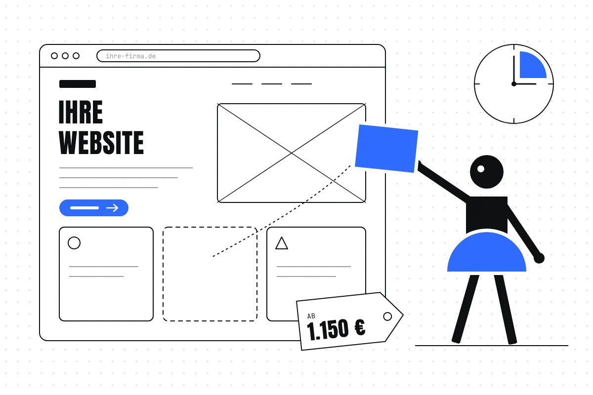
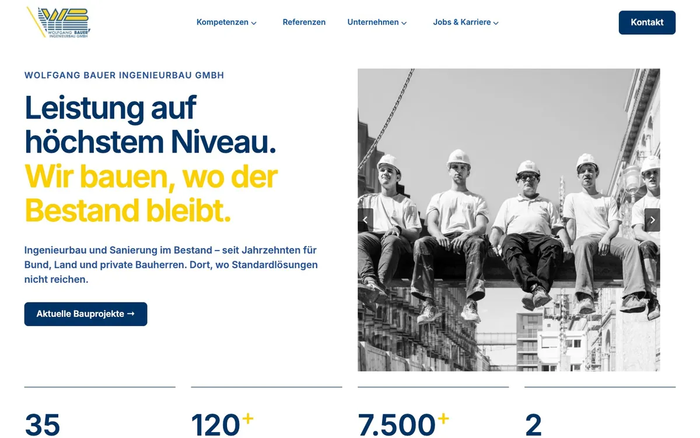

Was kostet eine Website – und wie lange dauert sie?
Einmalige Preise, laufende Kosten und ein realistischer Zeitplan: mit Zahlen aus meiner Preisliste, Beispielrechnungen und Erfahrungen aus Projekten mit kleinen und mittleren Unternehmen.

- Bei STUDIO AAH! beginnt ein Onepager bei 1.150 €, eine Website mit bis zu 6 Unterseiten bei 2.450 € und ein Redesign für mittelständische Unternehmen bei 5.000 € – jeweils netto. Für jede neue Website kommt einmalig der Launch für 150 € dazu.
- Im Paket „Website – neu oder Redesign“ sind 6 Unterseiten enthalten, jede weitere kostet 150 €. Eine Website mit 10 Unterseiten beginnt damit bei 3.200 € netto, Launch eingerechnet.
- Nach dem Launch zahlen Sie Hosting, Domain und Lizenzen direkt an die Anbieter. Wartung kostet bei mir ab 45 € im Monat, Änderungen ab 65 € pro Stunde.
- Ein Onepager dauert etwa 4 bis 6 Wochen, eine Website mit mehreren Unterseiten 3 bis 4 Monate, je nach Umfang bis zu 6 Monate.
- In meinen Projekten und Anfragen 2025 und 2026 drehten sich 35 von 79 schriftlichen Rückfragen um Inhalte oder den Ablauf – etwa: Welche Texte fehlen noch? Wer gibt frei?
Was kostet eine Website? Die Preise im Überblick
Eine Website kostet so viel, wie sie leisten soll. Eine Seite, die ein einzelnes Angebot vorstellt, ist ein anderes Projekt als ein Unternehmensauftritt mit Leistungs-, Referenz- und Karriereseiten. Bei meiner Recherche im Oktober 2026 habe ich nur Preisangaben von Anbietern selbst gefunden, aber keine unabhängige Erhebung zu Website-Preisen in Deutschland mit offengelegter Methode. Deshalb nenne ich hier meine eigenen Einstiegspreise – nachprüfbar auf meiner Preisseite.
| Paket | Für wen | Umfang | Preis | Dauer |
|---|---|---|---|---|
| Onepager | Selbstständige und kleine Angebote | alles auf einer langen Seite | ab 1.150 € | 4–6 Wochen |
| Website – neu oder Redesign | Unternehmen, die ihr Angebot ausführlich vorstellen | bis 6 Unterseiten, jede weitere 150 € | ab 2.450 € | 3–4 Monate, bis 6 |
| Redesign für Unternehmen | Mittelstand mit Leistungs-, Branchen-, Referenz- und Karriereseiten | typisch 10–25 Unterseiten, mit Design-System | ab 5.000 € | 3–4 Monate, bis 6 |
| Komplexes Projekt | mehr als 25 Unterseiten, Shop oder Mitgliederbereich | nach Absprache | ab 6.000 € | nach Umfang |
| Alle Preise ohne Umsatzsteuer. Bei jeder neuen Website kommt einmalig der Launch für 150 € dazu: Domain verbinden, technische Einträge (DNS), Umzug, Livegang. Den Festpreis erhalten Sie nach einem kostenlosen Erstgespräch. Stand: Oktober 2026. | ||||
In jedem Website-Paket stecken bei mir die Seitenstruktur (Sitemap), Design für Desktop und Handy, die Umsetzung in WordPress (Theme Kadence) oder Claude Code, ein Kontaktformular, Suchmaschinen-Optimierung (SEO) und LLM-Zitierfähigkeit sowie die Übergabe. Texte und Bilder kann ich liefern – Texte einmal für die ganze Website. Bilder wähle ich auf Plattformen mit lizenzfreien Bildern wie Unsplash aus oder erstelle sie mit KI. Zwei Korrekturrunden sind enthalten.
- Onepagerab 1.300 €
- Website 6 Unterseitenab 2.600 €
- Website 10 Unterseitenab 3.200 €
- Website zweisprachig 6 Unterseiten, +30 %ab 3.335 €
- Redesign für Unternehmenab 5.150 €
- Komplexes Projekt Shop, Mitgliederbereich, über 25 Seitenab 6.150 €
Selbst bauen oder bauen lassen?
| Weg | Was Sie zahlen | Was Sie selbst tun |
|---|---|---|
| Selbst bauen mit einem Baukasten (z. B. Wix, Jimdo) | die Gebühr des Anbieters, je nach Tarif | Struktur, Texte, Bilder, Gestaltung und Pflege – Ihre eigene Zeit ist ein großer Posten |
| Bauen lassen von Freelancerin, Studio oder Agentur | einen Projektpreis, danach Hosting, Domain und auf Wunsch Wartung | Inhalte liefern oder freigeben, Feedback geben |
Welcher Weg passt, hängt weniger vom Budget ab als von der Frage: Wie viel Zeit wollen und können Sie selbst investieren – und was soll die Website für Ihr Geschäft leisten?
Welches System? WordPress, Webflow, Baukasten oder individuell programmiert
Neben dem Projektpreis entscheidet das System darüber, welche Kosten jeden Monat oder jedes Jahr anfallen – und wer die Website später pflegt.
| System | So funktioniert es | Laufende Kosten | Selbst pflegen |
|---|---|---|---|
| WordPress (bei mir mit dem Theme Kadence) | Freie Software (GPL), die auf einem eigenen Hosting läuft. | Hosting, Domain, eventuell Pro-Lizenzen für Theme oder Plugins; Updates selbst oder als Wartung (bei mir ab 45 € im Monat) | ja, im WordPress-Editor; Schulung bei mir 70 € |
| Webflow | Gestaltung und Hosting aus einer Hand: Die Website liegt bei Webflow. | Webflow-Tarif, Domain | ja, im Webflow-Editor |
| Baukasten (z. B. Wix, Jimdo) | Website aus Vorlagen im Browser zusammenstellen, Hosting beim Anbieter. | Tarif des Anbieters, Domain je nach Tarif | ja, dafür ist er gemacht |
| Individuell programmiert (z. B. mit Claude Code) | Website im Kern aus reinem HTML und CSS, ohne Datenbank. | Hosting, Domain; keine Plugin-Updates | nein, Änderungen im Code – zum Beispiel über mich (ab 65 € pro Stunde) |
| Neue Websites setze ich in WordPress (Kadence) oder mit Claude Code um. Bestehende Webflow-Websites betreue und erweitere ich weiter. Welches System zu welchem Unternehmen passt, beschreibe ich ausführlich in Teil 4 der Reihe. | |||
| System und Tarif | Preis pro Monat | Hinweis |
|---|---|---|
| WordPress mit Kadence Essentials | 99 US-$ im Jahr (Pro: 299 US-$, Elite: 499 US-$) | Lizenz für Theme und Blöcke; WordPress selbst ist kostenlos, Hosting kommt dazu (Vergleich) |
| Webflow Basic | 15 US-$ bei Jahreszahlung, 25 US-$ monatlich, zzgl. Steuern | eigene Domain, aber ohne CMS (keine selbst pflegbaren Beiträge) |
| Webflow Premium | 25 US-$ bei Jahreszahlung, 39 US-$ monatlich, zzgl. Steuern | mit CMS (bis 20.000 Einträge); Hosting bei Amazon Web Services, eine EU-Region nennt Webflow nicht |
| Jimdo Start | 12 € bei 12 Monaten Laufzeit, inkl. MwSt. | Domain im ersten Vertragsjahr rabattiert; Hosting in der EU |
| Jimdo Grow | 20 € bei 12 Monaten Laufzeit, inkl. MwSt. | mehr Speicher und Weiterleitungen; mit Rechtstexten als „Grow Legal“ 29 € |
| Wix Premium | laut Wix „ab 16,66 €“ bei jährlicher Zahlung | Paketpreise für Deutschland konnte ich nicht abrufen; Rechenzentren weltweit |
| Preise von den Websites der Anbieter. Kadence und Webflow nennen nur US-Dollar. Die Jimdo-Preise stammen aus Jimdos Preisabfrage für Deutschland. Prüfen Sie vor einer Entscheidung den aktuellen Stand beim Anbieter. | ||
Wovon der Preis abhängt
- Anzahl der Unterseiten: Jede Seite braucht Struktur, Text, Gestaltung und Umsetzung. Im Paket „Website – neu oder Redesign“ kostet deshalb jede Unterseite über sechs hinaus 150 €.
- Ausgangslage: Bei einem Redesign analysiere ich die bestehende Seite, übernehme vorhandene Inhalte und richte Weiterleitungen alter Adressen ein, damit Besucher:innen und Google nichts verlieren.
- Funktionen: Ein Blog kostet 490 €, eine Newsletter-Anbindung 260 €, jede weitere Sprache 30 % des Website-Preises. Shop oder Mitgliederbereich machen ein eigenes Projekt daraus.
- Inhalte: Gibt es Texte, Fotos, Logo und Grafiken schon – oder müssen sie erst entstehen?
- Abstimmung: Zwei Korrekturrunden sind enthalten. Jede weitere rechne ich nach Aufwand ab, 65 € pro Stunde.
Laufende Kosten nach dem Launch
Mit dem Launch ist die Website fertig, aber nicht kostenlos. Einige Posten zahlen Sie direkt an die Anbieter, andere nur, wenn Sie Unterstützung möchten.
| Posten | Wofür | An wen | Kosten |
|---|---|---|---|
| Domain | Ihre Adresse, z. B. ihre-firma.de | Domain-Anbieter | etwa 5–22 € im Jahr (Vergleich) |
| Hosting | Speicherplatz und Server für Ihre Website | Hosting-Anbieter | etwa 4–29 € im Monat (Vergleich) |
| SSL-Zertifikat | verschlüsselte Verbindung (https) | z. B. Let’s Encrypt | bei Let’s Encrypt kostenlos |
| Lizenzen | z. B. Pro-Versionen von Theme oder Plugins | Hersteller | je nach Erweiterung |
| Wartung (optional) | Updates von WordPress, Plugins und Theme, Überwachung, Sicherheitschecks, kleine Bildänderungen, PDFs austauschen | STUDIO AAH! | ab 45 € im Monat |
| Änderungen (optional) | Texte und Bilder austauschen, neue Unterseiten, Abschnitte bearbeiten (Retainer) | STUDIO AAH! | ab 65 € pro Stunde |
| Schulung (einmalig) | damit Sie selbst pflegen können: PDF-Anleitung oder Online-Termin | STUDIO AAH! | 70 € |
WordPress selbst ist freie Software unter der GPL-Lizenz. Kosten entstehen für Hosting, Domain, mögliche Pro-Erweiterungen – und für die Zeit, die Pflege braucht.
Hosting und Domain: sieben Anbieter im Vergleich
Für eine kleine Firmenwebsite mit WordPress zahlen Sie bei deutschen Anbietern regulär etwa 4 bis 29 € im Monat fürs Hosting und 5 bis 22 € im Jahr für eine .de-Domain. Die Tabelle zeigt, was jeweils enthalten ist.
| Anbieter und Paket | pro Monat, regulär | Einstieg | .de-Domain | Laufzeit | |
|---|---|---|---|---|---|
| IONOS WordPress Start | 5,00 € | 3 € in den ersten 6 Monaten | inklusive* | 1 Postfach | 12 Monate |
| STRATO WordPress Basic | 5,00 € | 1. Monat 0 € | inklusive | 1 Postfach | 12 Monate |
| ALL-INKL.COM Privat | 5,90 € (inkl. 0,95 € SSL) | 1. Monat gratis | 3 inklusive | 500 Postfächer | keine |
| netcup Webhosting 2000 | 4,03 € | – | 3 inklusive | 500 Adressen | 12 Monate |
| Hetzner Webhosting L | 9,90 € | – | nicht enthalten, 5,83 € im Jahr | unbegrenzt | keine |
| mittwald Webhosting M | 22,61 € (19 € netto, nur für Gewerbetreibende) | – | nicht enthalten, 12,71 € im Jahr + 3,56 € Einrichtung | unbegrenzt* | 1 Monat |
| Raidboxes Starter (Managed WordPress) | 28,56 € (24 € netto), bei Jahreszahlung 25,70 € | – | nicht enthalten, 21,42 € im Jahr | extra, ab 3,57 € im Monat | Abrechnungszeitraum |
| Je Anbieter das kleinste Paket für WordPress; wo der Anbieter selbst ein Paket für Unternehmen empfiehlt (Hetzner, netcup, mittwald, Raidboxes), dieses. Netto-Preise habe ich mit 19 % MwSt. umgerechnet. Bei allen sieben ist ein SSL-Zertifikat möglich, die Server stehen in Deutschland (bei netcup wählbar, voreingestellt Nürnberg), und alle bieten einen Vertrag zur Auftragsverarbeitung (AVV) nach Art. 28 DSGVO an. Einstiegsangebote gelten laut Anbietern nur befristet. * IONOS nennt die Domain teils „für 1 Jahr“, teils „dauerhaft“ inklusive; bei mittwald unbegrenzt bis zum gebuchten Speicherplatz. | |||||
Mein Tipp: Vergleichen Sie den regulären Preis, nicht das Einstiegsangebot, und schauen Sie auf die Mindestlaufzeit. Managed-Hosting wie Raidboxes ist teurer, übernimmt dafür aber einen Teil der technischen Pflege. Welches Hosting zu welcher Website passt, ist Thema in Teil 4 der Reihe.
Was ich für meine Kunden nutze: Domains registriere ich bei IONOS. Websites setze ich in WordPress mit Kadence Pro um oder mit Claude Code.
- Website mit 10 Unterseiten (2.450 € + 4 × 150 €)ab 3.050 €
- Launch, einmalig150 €
- Wartung, 12 × 45 € (optional)540 €
- Hosting, Domain, Lizenzenbeim Anbieter
- Erstes Jahr bei STUDIO AAH!ab 3.740 €
Wie lange dauert eine Website?
Ein Onepager dauert bei mir etwa 4 bis 6 Wochen. Eine Website mit mehreren Unterseiten dauert etwa 3 bis 4 Monate, je nach Umfang bis zu 6 Monate. Wie schnell es geht, hängt auch davon ab, wie zügig Texte, Bilder und Feedback vorliegen.
- Onepager 4–6 Wochen
- Website mit Unterseiten 3–4 Monate, je nach Umfang bis 6
- Beispiel Redesign mit Rebranding, 4 Monate
Ein Website-Projekt besteht aus mehreren Schritten: Analyse, Strategie, Gestaltung, Inhalte und Umsetzung. An vier Stellen halten wir an, und Sie geben frei, bevor es weitergeht:
- Schritt01
Erst verstehen, wo Sie stehen.
Ist-Stand, Expert Review Ihrer Website, Markt und Mitbewerber.
- Schritt02
Gemeinsam schärfen.
Bedarf, Branche, Zielgruppe und Ziele festlegen.
Freigabe
- Schritt03
Vom Look and Feel zur fertigen Seite.
Look and Feel, Konzept, Inhalte und Umsetzung.
2 Freigaben
- Schritt04
Launch.
Domain verbinden, Umzug, Livegang.
Freigabe vor Go-live

Was Projekte verlängert – und wie Sie Zeit sparen
Für diesen Beitrag habe ich ausgewertet, worum es in den schriftlichen Rückfragen meiner Kund:innen ging:
- 44%
- Inhalte und Ablauf (35 von 79)
- 18%
- Gestaltung (14 von 79)
- 6%
- Kosten (5 von 79)
- 5%
- Technik und Hosting (4 von 79)
Rückfragen sind keine Zeitmessung. Sie zeigen aber, wo Abstimmung nötig war: Welche Texte fehlen noch? Welche Korrektur ist schon umgesetzt? Wer gibt frei? Aus einem Projekt kam zum Beispiel die Rückmeldung, man habe den Überblick verloren, weil Aufgaben über viele einzelne Mails verteilt waren. Das ist verständlich – und lässt sich mit etwas Planung vermeiden.
Sechs Wege, Ihr Projekt schneller ins Ziel zu bringen
- Eine Ansprechperson benennen, die entscheiden und freigeben darf.
- Texte und Bilder früh klären: Wer liefert was bis wann? Eine Bildliste hilft, bevor jemand fotografiert.
- Feedback bündeln: alle Änderungswünsche einer Korrekturrunde in einem Dokument statt in vielen Mails.
- Freigabetermine gleich zu Beginn in den Kalender legen – Ihre eigene Zeit ist Teil des Zeitplans.
- Zugänge früh bereitstellen: Domain, Hosting und die alte Website.
- Logo und Grafiken in passenden Formaten bereithalten, am besten als Vektordatei (SVG).
Grundlage sind die E-Mails zu 4 Website-Projekten und 2 Anfragen der Jahre 2025 und 2026. Ich habe jede Frage, Sorge und Unsicherheit festgehalten – 79 insgesamt – und genau einem Thema zugeordnet: Ablauf und Zusammenarbeit 18, Inhalte 17, Gestaltung 14, Pflege und Zugänge 9, Kosten 5, Formulare und E-Mails 5, Technik und Hosting 4, Recht 2, Sichtbarkeit bei Google 1, Erfolgsmessung 1, Sonstiges 3. Telefonate und Erstgespräche sind nicht enthalten; Fragen vor dem Auftrag, etwa zu Kosten, sind deshalb vermutlich seltener vertreten, als sie gestellt werden. Alle Beispiele sind ohne Namen und sinngemäß wiedergegeben.
Relaunch oder Überarbeitung?
Nicht jede Website braucht einen Neustart. Oft reicht es, gezielt nachzubessern. Diese Gegenüberstellung hilft bei der Entscheidung:
Eine Überarbeitung reicht, wenn …
- Marke und Angebot noch passen,
- die Technik aktuell ist und sich pflegen lässt,
- die Seitenstruktur grundsätzlich stimmt,
- es um einzelne Seiten, Texte, Bilder oder die Sichtbarkeit geht.
Einstieg: Expert Review ab 1.200 € oder SEO & LLM-Zitierfähigkeit für bestehende Websites ab 260 €.
Ein Relaunch lohnt sich, wenn …
- sich Angebot oder Marke verändert haben,
- die Seite auf dem Handy schwer zu lesen und zu bedienen ist,
- die Technik veraltet ist und sich niemand kümmert,
- neue Bereiche fehlen, zum Beispiel Karriere oder Referenzen.
Einstieg: Website – neu oder Redesign ab 2.450 €, Redesign für Unternehmen ab 5.000 €.
Wichtig beim Relaunch: Alte Adressen müssen automatisch auf die neuen Seiten weiterleiten. Sonst verlieren Besucher:innen und Google den Weg zu Ihren Inhalten.
So bekommen Sie ein verlässliches Angebot
Je klarer Ihre Ausgangslage, desto genauer das Angebot. Diese Punkte sollten Sie vor dem Erstgespräch beantworten können:
- Ziel: Was soll die Website leisten – Anfragen, Bewerbungen, Information?
- Seitenliste: Welche Unterseiten brauchen Sie? Sie bestimmt den Umfang – und damit den Preis.
- Inhalte: Gibt es Texte und Bilder, oder sollen sie entstehen?
- Funktionen: Blog, Newsletter, Karrierebereich, Shop, weitere Sprachen?
- Zeitrahmen: Gibt es einen festen Termin, etwa eine Messe oder ein Jubiläum?
- Budgetrahmen: Eine ehrliche Spanne hilft, das Passende vorzuschlagen.
So läuft es bei mir ab: Sie stellen sich im Kostenrechner einen unverbindlichen Kostenvoranschlag zusammen. Im kostenlosen Erstgespräch klären wir Ist-Stand, Ziele, Bedarf und Zielgruppe. Danach erhalten Sie ein Angebot mit Festpreis. Größere Projekte zahlen Sie in drei Raten: bei Start, nach Freigabe des Konzepts und beim Go-live.
Häufige Fragen
Was kostet eine einfache Website für Selbstständige?
Bei STUDIO AAH! beginnt ein Onepager bei 1.150 € netto, eine Website mit bis zu 6 Unterseiten bei 2.450 € netto. Für jede neue Website kommt einmalig der Launch für 150 € dazu.
Was kostet eine Website im Monat?
Nach dem Launch zahlen Sie Hosting, Domain und eventuelle Lizenzen direkt an die Anbieter; die Höhe hängt von Anbieter und Tarif ab. Wer Unterstützung möchte: Wartung kostet bei STUDIO AAH! ab 45 € im Monat, Änderungen und Weiterentwicklung ab 65 € pro Stunde.
Wie lange dauert es, eine Website erstellen zu lassen?
Ein Onepager dauert bei STUDIO AAH! etwa 4 bis 6 Wochen. Eine Website mit mehreren Unterseiten dauert etwa 3 bis 4 Monate, je nach Umfang bis zu 6 Monate. Wie schnell es geht, hängt auch davon ab, wie zügig Texte, Bilder und Feedback vorliegen.
Was kostet eine zusätzliche Unterseite?
Im Paket „Website – neu oder Redesign“ (ab 2.450 €) sind 6 Unterseiten enthalten. Jede weitere Unterseite kostet 150 €. Eine Website mit 10 Unterseiten kostet damit ab 3.050 €, mit Launch 3.200 € netto.
Was kostet eine mehrsprachige Website?
Jede weitere Sprache kostet 30 % des Website-Preises. Die Übersetzung liefern Sie. Eine zweisprachige Website mit 6 Unterseiten kostet damit ab 3.185 €, mit Launch 3.335 € netto.
Woher kommen die Bilder für meine Website?
Sie können eigene Fotos liefern. Außerdem kann STUDIO AAH! Bilder liefern: lizenzfreie Bilder von Plattformen wie Unsplash oder mit KI erstellte Bilder. Ein Fotoshooting führt STUDIO AAH! nicht selbst durch, kann es aber vermitteln.
Muss ich alles auf einmal bezahlen?
Nein. Größere Projekte zahlen Sie bei STUDIO AAH! in drei Raten: bei Start, nach Freigabe des Konzepts und beim Go-live.
Was passiert, wenn ich mehr Änderungen möchte?
Zwei Korrekturrunden sind im Festpreis enthalten. Jede weitere Runde rechnet STUDIO AAH! nach Aufwand ab, 65 € pro Stunde.
Lohnt sich ein Relaunch oder reicht eine Überarbeitung?
Eine Überarbeitung reicht, wenn Marke, Angebot, Technik und Seitenstruktur noch passen und es um einzelne Seiten, Texte oder die Sichtbarkeit geht. Ein Relaunch lohnt sich, wenn sich Angebot oder Marke verändert haben, die Seite auf dem Handy schlecht funktioniert oder die Technik veraltet ist. Beim Relaunch müssen alte Adressen auf die neuen Seiten weiterleiten.
Sind die Preise netto?
Ja. Alle genannten Preise sind Einstiegspreise ohne Umsatzsteuer. Den Festpreis erhalten Sie nach einem kostenlosen Erstgespräch.
Was kostet Ihre Website?
Stellen Sie sich Ihr Projekt im Kostenrechner zusammen – in einer Minute haben Sie einen ersten Kostenvoranschlag. Oder wir sprechen im kostenlosen Erstgespräch über Ihr Vorhaben.
Anna Härtelt
Gründerin von STUDIO AAH! in Leipzig. UX/UI-Designerin, Strategin und Webentwicklerin, seit 2020 selbstständig, mehr als 40 Projekte – von der Website für Selbstständige bis zum Redesign für mittelständische Unternehmen.
Quellen
- Preise und Leistungen: Preisseite von STUDIO AAH! und Leistungsseite Website, Stand Oktober 2026.
- Eigene Auswertung: 79 schriftliche Rückfragen zu 4 Website-Projekten und 2 Anfragen, 2025–2026 (Methode siehe oben).
- Ablauf und Freigaben: Was KI an meiner Arbeit verändert hat – und was nicht.
- Let’s Encrypt: Über Let’s Encrypt – „kostenlos“ für alle, die eine Domain besitzen.
- Anbieterpreise, abgerufen am 13.10.2026: IONOS , STRATO , ALL-INKL.COM , netcup , Hetzner , mittwald , Raidboxes , Kadence , Webflow , Jimdo , Wix .
- WordPress: Lizenz (GPL Version 2 oder später) .